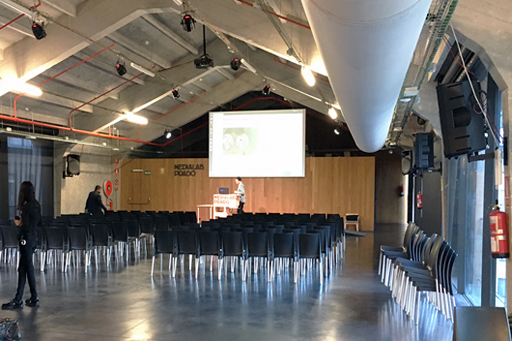

El último piso de la nave Cenicero era un espacio diáfano que originalmente se usaba para exponer productos elaborados en la serrería y maquinaria para labrar madera.
Actualmente se divide en dos zonas: el auditorio en el lado Sur, orientado hacia Atocha, que ocupa la mayor parte de la planta, y en el lado Norte, orientado hacia la Plaza de las Letras, un vestíbulo al que se accede desde el rellano de La Cosa, atravesando una puerta de cristal de apertura automática. A esta puerta podemos llegar subiendo la escalera y girando a la izquierda, o bien por el ascensor del edificio Alameda, doblando a la izquierda y cruzando el pasillo de la Cosa que une ambas naves.
Al igual que en resto de Medialab, en la parte septentrional de la nave hay una gran estructura de madera que no llega a tocar las paredes de hormigón. Esta estructura, de planta rectangular y compartida por los dos espacios, es donde se ubican las escaleras de emergencia, los baños y la cabina de mandos del auditorio.
⇧ Volver arriba
El vestíbulo tiene forma rectangular y la puerta por la que accedemos desde La Cosa está en uno de sus lados largos. A la izquierda, en línea con esta puerta, hay una pared de cristal de unos 5 metros de ancho que da al patio.
El otro lado largo, frente a la puerta, lo forma una de las paredes de la estructura de madera, con un armario ropero en el centro y a la derecha, en esa misma pared, la salida de emergencia que baja al vestíbulo de las oficinas y a la ludoteca.
En el lado corto que tenemos a la derecha, nada más entrar, encontramos la doble puerta de cristal que da paso al Auditorio, en una pared también de cristal.
El otro lado corto, a nuestra izquierda, está formado por la pared de hormigón de la nave. Si seguimos avanzando a lo largo de ésta, entramos en un pasillo delimitado a su derecha por la estructura de madera donde están los baños. Al fondo, a la izquierda, hay un ventanal que se abre al paso de carros. El pasillo continúa hacia la derecha bordeando por detrás la estructura de madera, en paralelo a la calle Cenicero, y desemboca en la puerta de servicio del auditorio.
⇧ Volver arriba
El auditorio de Medialab está en el lado Sur de la nave. Es un enorme rectángulo diáfano de unos 23 metros de largo por 13 de ancho. La puerta de acceso desde el vestíbulo está en uno de sus lados cortos, junto a la esquina derecha, de modo que cuando entramos, la sala se extiende por la izquierda y hacia delante, con el escenario al fondo.
El lado izquierdo del rectángulo es el muro de hormigón de la nave, con seis grandes ventanas que miran a la calle Cenicero. El lado derecho está cubierto por grandes paneles correderos de cristal, ya que en la rehabilitación se quiso preservar la idea de ligereza de esta fachada, que en origen se abría completamente al patio, sin paredes.
La cubierta es a dos aguas, alcanzando una altura máxima en el punto central de 6 metros. Es una techumbre curiosa que imita en hormigón la forma típica de los tejados de madera, con vigas transversales gruesas en forma de V, apoyando en los pilares laterales, y otras más finas dispuestas de Norte a Sur.
Para enfatizar el aspecto industrial del edificio, se decidió dejar a la vista en el techo la instalación actual de cableado, sistema anti-incendio y climatización, junto a las lámparas tubulares blancas y los focos para iluminar el escenario. Fijados a los pilares laterales, podemos ver seis grandes altavoces, tres a cada lado del auditorio.
El suelo es de hormigón pulido de color gris oscuro, casi negro.
Al fondo del auditorio se encuentra la tarima del escenario, de madera enmoquetada, a la que accedemos subiendo un escalón. Encima de ésta hay un atril de madera clara fabricado en el Fablab. La pared trasera del escenario también es de madera, con una enorme pantalla blanca en el centro colgada del techo. Más a la izquierda, en la pared, está el logo de Medialab Prado hecho con letras negras en relieve, y a continuación una salida de emergencia que conecta con la de la oficina. Tras esta pared de madera, a la derecha, encontramos una sala insonorizada para grabar programas de radio.
En el lado opuesto al escenario, entre la puerta principal del auditorio y la de servicio, se ubica la estructura de madera y, en su interior, la cabina de mandos para controlar la iluminación, el sonido y el vídeo.
El auditorio es un espacio polivalente, al igual que el resto de Medialab, en el que se puede organizar una charla colocando las sillas en filas frente al escenario, o bien distribuirlas en torno a mesas para hacer talleres. Además las ventanas tienen una doble estructura de persianas, una negra que filtra la luz del sol y otra blanca que es una pantalla, de modo que la gente pueda distribuirse en grupos y proyectar sobre cualquiera de ellas.
⇧ Volver arriba
⇦ Anterior: Nave Cenicero - Planta 1
⇨ Siguiente: Menú